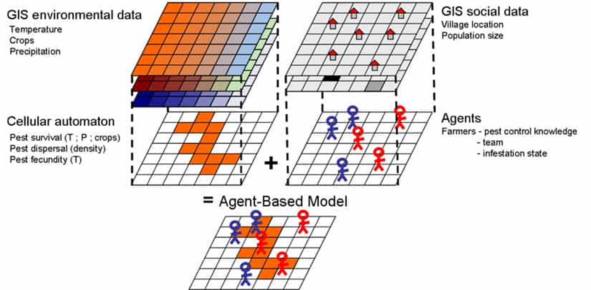
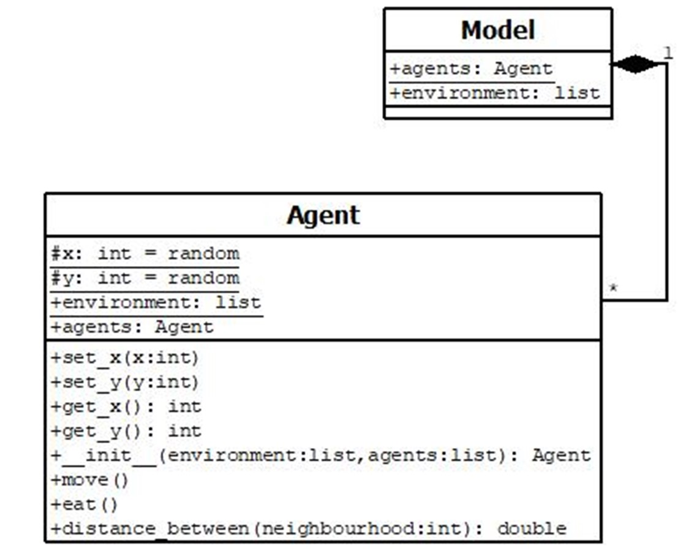

Agent-Based Modelling
Agent-Based Modelling (ABM) is a computational simulation, where the model consists of a system of agents (objects), along with their interactions and relationships with both each other and the
environment (Bonabeau, 2002). Simple ABM's can produce complex behavioural patterns between agents thus, complex dynamical systems that occur in the real-world can be modelled and then analyzed (Bonbabeau, 2002). Examples
of complex systems these models can produce include: retail consumer behaviour, psychological reactions to diaster events, spread of communicable diseases and agricultural pest control (Mosimtec, 2019). Understanding
these dynamics in real-world systems is vital, as it allows for predication analysis and allows for multiple complex scenarios to be modelled and accounted for.

An example of the use of ABM in an agricultural pest control study (Rebaudo, 2011).
Construction of an Agent-Based Model initially begins with an Agent class that contains variables such as, location or ages, and the whole agent class is ring-fenced, allowing
for methods/procedures code to be generated (Evans, 2022a For instance, the class to be moved when the model is initiated (Evans, 2022). There is also a Model class that calls the agent's methods and get
them to act (Evans, 2022a). These two classes form foundation of a simple ABM however, most models interact with their environment therefore, an environment (range from two-dimensional array of data to
complex three-dimensional topograhies, or even computer networks) (Evans, 2022a). Click on Code in the navigation bar to be directed towards code showing the foundation of an ABM.

Screenshot of UML (Unified Modelling Language) for an ABM. The Agent class holds the environment and random x and y values, in which the agents move and eat, which is then acted in the Model Class,
within the environment and can then be plotted and animated over a number of iterations (Evans, 2022b).
References:
- Bonbabeau, E., 2002. Agent-based modeling: Methods and techniques for simulating human systems. Proceedings of the National Academy of Sciences of the United States of America. 99(suppl_3), pp. 7280-7287.
- Evans, A., 2022a. Agent Based Modelling: Introduction. GEOG 5990M Programming for Geographical Information Analysis: Core Skills. University of Leeds. Available from: http://www.geog.leeds.ac.uk/courses/other/crime/abm/general-modelling/index.html
- Evans, A., 2022b. Communication. GEOG 5990M Programming for Geographical Information Analysis: Core Skills. University of Leeds. Available from: https://www.geog.leeds.ac.uk/courses/computing/practicals/python/agent-framework/part7/4.html
- Mosimtec., 2019. 4 Agent Based Modeling Examples. [Online]. [Accessed 28 April 2022]. Available from: https://mosimtec.com/agent-based-modeling-examples/
- Rebaudo, F., Crespo-Perez, V., Silvain, J-F., Dangles, O., 2011. Agent-Based Modeling of Human-Induced Spread of Invasive Species in Agricultural Landscapes: Insights from the Potato Moth in Ecuador. Journal of Artificial Societies and Social Simulation. 14(3), pp 1-7.